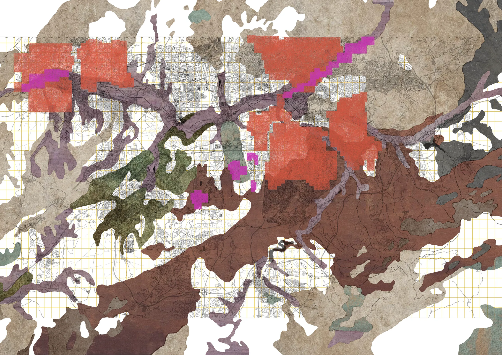
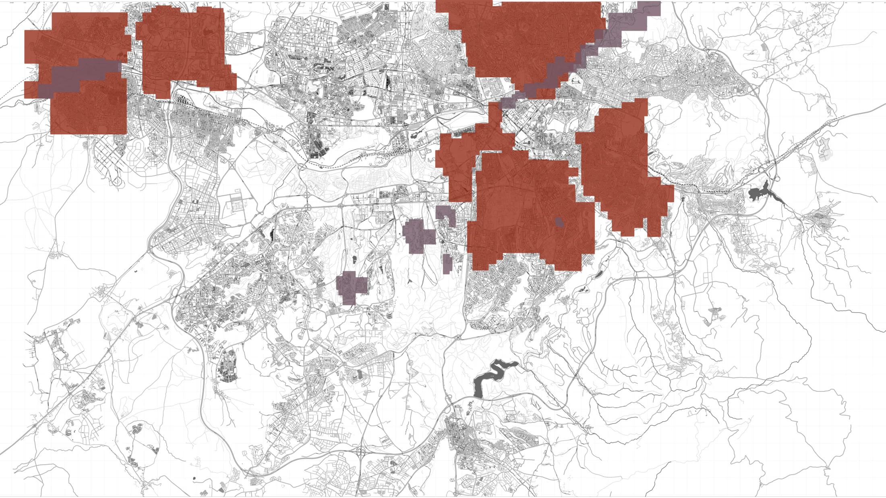
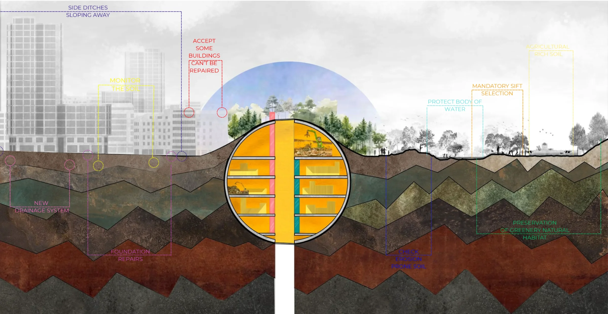

When the city ignores this matrix, the earth retaliates. The act of sifting exposes the severe consequences of design erasure, reframing structural failures not as engineering defects, but as physical messages of the Earth's resistance. Our research focuses on systemic management failures across specific geotechnical realities:
The "Ankara Clay" Hazard: In southwestern districts, including our own METU Campus, developers build lightweight structures with shallow foundations (0.2–0.5m) directly on expansive clay with a 2-meter active zone. This negligence causes severe 45-degree cracks, as the soil's internal swelling pressure easily exceeds the weight of the buildings above it.
The Erosion Crisis: Utilizing the ICONA model, we identified nearly 124,300 hectares at high erosion risk, resulting in an annual loss of approximately 625,229 tons of soil.
Hydrological Disruption: Flat, concrete topographies block natural drainage, creating self-destructive moisture traps that constantly activate the clay.
To resolve this, we mandate a total transition from imposing a grid to cultivating a substrate. Our Strategic Ground Protocol enforces deep perimeter drainage, suspended structural slabs, and an end to unsustainable "demolition-and-rebuild" cycles.

How do we practically apply this diagnostic framework? We establish a mandatory "soil literacy requirement". For existing buildings on error zones, we propose retrofitting deep subsurface drainage and underpinning foundations rather than tearing them down. For new constructions, a 2-meter soil coring test must be completed before any permit is issued. Building on Ankara Clay explicitly requires expansion joints every 10 to 12 meters, while construction on high-erosion slopes or rich agricultural soils is strictly prohibited.
The Strategic Ground Protocol
To address these crises, the project establishes a straightforward, non-negotiable framework for future development: